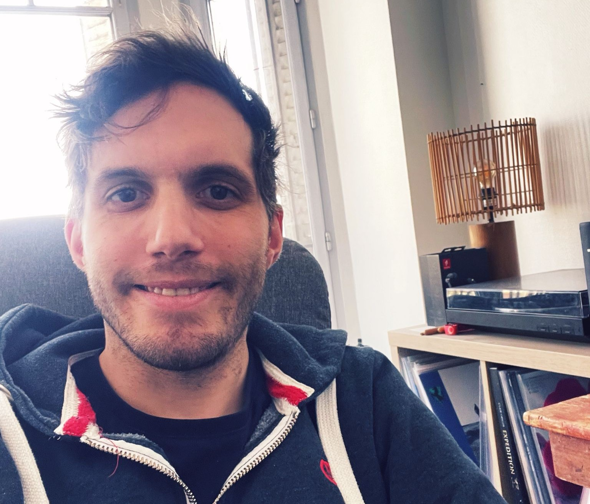

UX / Product Designer spécialisé dans la simplification de systèmes complexes.
Depuis plus de 9 ans, j’accompagne les équipes afin de rendre les parcours plus clairs, plus efficaces et réellement utiles pour les utilisateurs.
- • Outils complexes (B2B, outils internes), avec une forte attention à l’accessibilité numérique
- • Optimisation des parcours utilisateurs et résolution de problématiques métier
- • Expériences : grands groupes, startups, freelance, agences, ESN
- • Interventions : recherche utilisateur, co-conception, prototypage, tests utilisateurs, recette / suivi du developement
- • Secteurs : assurance, éducation, automobile, immobilier, service public